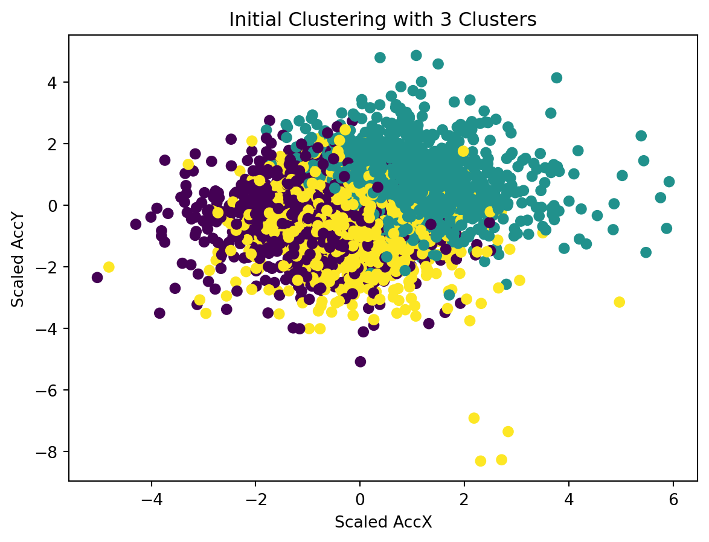
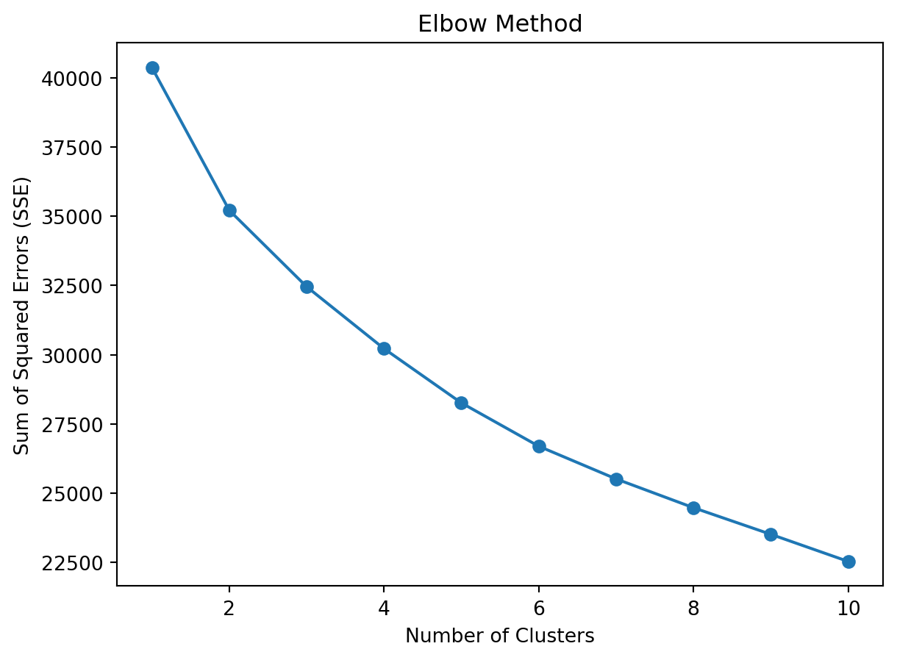
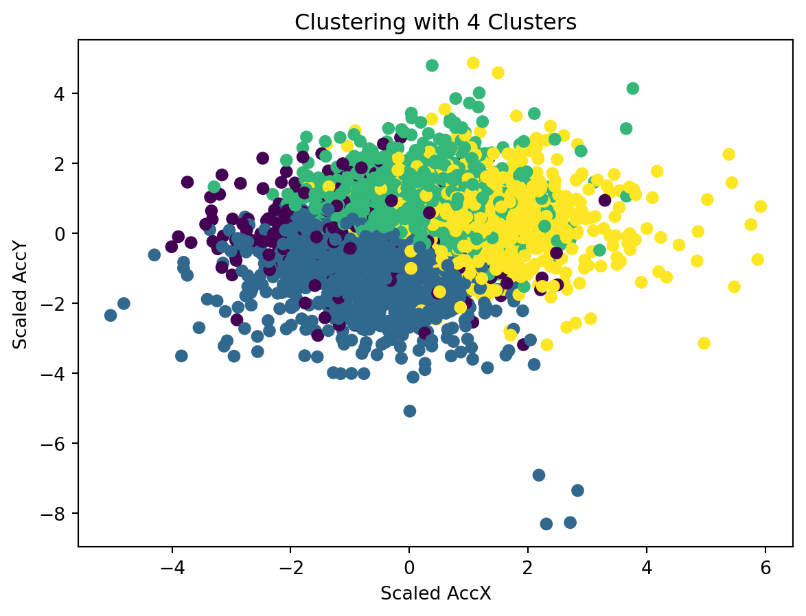

Clustering: Optimizing Driver Behavior Analysis with Machine Learning Clustering
Introduction
The analysis of driving behaviors, a task of both complexity and nuance, is increasingly significant in the realms of traffic safety and autonomous vehicle development. Machine learning, particularly clustering algorithms, stands at the forefront of this analysis, offering the ability to dissect and understand the myriad patterns hidden within driving data. Clustering, a form of unsupervised learning, excels in finding structure within unlabeled data, grouping similar data points together based on shared characteristics.
In this blog, we dive into a practical application of clustering using a dataset from Kaggle titled ‘Driving Behavior’. This dataset is intriguing because it comes with labeled data, categorizing driving behaviors into three types: SLOW, NORMAL, and AGGRESSIVE. While clustering typically operates on unlabeled data, we use this labeled dataset to our advantage. It will allow us to compare the clusters formed by our machine learning algorithm against the pre-labeled categories, providing an insightful backdrop to understand and validate our clustering results.
Our aim is to illustrate the entire process of applying clustering to analyze driving behavior. We start with a predefined notion of having three clusters based on the labels present in the dataset. However, as we delve deeper into the analysis, we realize the necessity to step back and question our initial assumptions. We employ the Elbow Method, supplemented by the kneed Python package, to determine the optimal number of clusters in a more data-driven manner. This journey from assumption to optimization is not just about applying a machine learning technique but also about understanding the nuances and intricacies that come with real-world data analysis.
Join us as we unravel the complexities of driving behaviors through clustering, starting with predefined labels and moving towards an optimized, data-driven approach.
Setting the Stage with Data and Tools
In the world of machine learning, the choice of dataset is as crucial as the algorithm itself. For our endeavor into clustering driving behaviors, we’ve chosen a dataset from Kaggle named ‘Driving Behavior’. This dataset is particularly interesting for a few reasons. Firstly, it’s labeled with specific driving behaviors, which, while not necessary for clustering, provides us with a unique opportunity to validate and understand our clustering results in a more tangible way.
The Kaggle ‘Driving Behavior’ Dataset
This dataset offers a detailed glimpse into various aspects of driving, captured through different features:
Acceleration (AccX, AccY, AccZ): These features measure the vehicle’s acceleration in meters per second squared (\[m/s^2\]) along the X, Y, and Z axes. Acceleration data is crucial for understanding sudden movements and changes in driving speed.
Rotation (GyroX, GyroY, GyroZ): Here, we have the vehicle’s angular velocity around the X, Y, and Z axes, measured in degrees per second (\[°/s\]). This data helps in identifying steering patterns and gauging the stability of the vehicle during various maneuvers.
Classification Labels (SLOW, NORMAL, AGGRESSIVE): Each data point is tagged with one of these labels. It’s important to note that in clustering, such labels are not typically required. However, in our case, these labels will serve as a benchmark, enabling us to compare our unsupervised learning results with pre-defined categories.
This dataset not only provides a foundation for applying clustering techniques but also allows us to explore how well unsupervised learning can mirror human-labeled classifications.
Tools and Libraries
Our analysis will be powered by several key tools and libraries, each bringing its own strengths to the table:
Python: Our language of choice, renowned for its ease of use and strong community support, especially in data science.
Scikit-learn: A powerful Python library for machine learning. We will use its clustering algorithms, specifically KMeans, to group our data.
Matplotlib: This library will help us in visualizing our data and the results of our clustering, making the insights more accessible.
kneed: An invaluable tool when it comes to determining the optimal number of clusters. It programmatically identifies the ‘elbow point’ in our dataset, a crucial step in ensuring our clustering approach is as effective as possible.
In the next sections, we’ll dive into the process of applying these tools to our dataset, starting with our initial approach and gradually moving towards a more refined, data-driven methodology.
Initial Clustering Approach
Embarking on our journey to unravel the driving patterns hidden in the dataset, we initially gravitated towards a straightforward approach: clustering the data into three groups. This decision was influenced by the dataset’s labels - SLOW, NORMAL, and AGGRESSIVE. It seemed logical to align our clusters with these pre-defined categories, under the assumption that they would naturally encapsulate the essence of the driving behaviors.
Why Start with Three Clusters?
The rationale was straightforward: the dataset labels suggested three distinct types of driving behaviors. Clustering aims to group similar data points, and with these labels as a guide, it seemed reasonable to start our analysis by segmenting the data into three clusters, hoping they would align with the labeled behaviors.
Applying KMeans Clustering
The KMeans algorithm was chosen for its simplicity and effectiveness in many clustering scenarios. Here’s a breakdown of how we applied it:
Defaulting to user installation because normal site-packages is not writeable
Requirement already satisfied: numpy in /Users/zimingfang/Library/Python/3.9/lib/python/site-packages (1.26.2)
WARNING: You are using pip version 21.2.4; however, version 23.3.1 is available.
You should consider upgrading via the '/Library/Developer/CommandLineTools/usr/bin/python3 -m pip install --upgrade pip' command.
Defaulting to user installation because normal site-packages is not writeable
Requirement already satisfied: matplotlib in /Users/zimingfang/Library/Python/3.9/lib/python/site-packages (3.8.2)
Requirement already satisfied: python-dateutil>=2.7 in /Users/zimingfang/Library/Python/3.9/lib/python/site-packages (from matplotlib) (2.8.2)
Requirement already satisfied: importlib-resources>=3.2.0 in /Users/zimingfang/Library/Python/3.9/lib/python/site-packages (from matplotlib) (6.1.1)
Requirement already satisfied: contourpy>=1.0.1 in /Users/zimingfang/Library/Python/3.9/lib/python/site-packages (from matplotlib) (1.2.0)
Requirement already satisfied: pyparsing>=2.3.1 in /Users/zimingfang/Library/Python/3.9/lib/python/site-packages (from matplotlib) (3.1.1)
Requirement already satisfied: packaging>=20.0 in /Users/zimingfang/Library/Python/3.9/lib/python/site-packages (from matplotlib) (23.2)
Requirement already satisfied: kiwisolver>=1.3.1 in /Users/zimingfang/Library/Python/3.9/lib/python/site-packages (from matplotlib) (1.4.5)
Requirement already satisfied: fonttools>=4.22.0 in /Users/zimingfang/Library/Python/3.9/lib/python/site-packages (from matplotlib) (4.45.1)
Requirement already satisfied: cycler>=0.10 in /Users/zimingfang/Library/Python/3.9/lib/python/site-packages (from matplotlib) (0.12.1)
Requirement already satisfied: pillow>=8 in /Users/zimingfang/Library/Python/3.9/lib/python/site-packages (from matplotlib) (10.1.0)
Requirement already satisfied: numpy<2,>=1.21 in /Users/zimingfang/Library/Python/3.9/lib/python/site-packages (from matplotlib) (1.26.2)
Requirement already satisfied: zipp>=3.1.0 in /Users/zimingfang/Library/Python/3.9/lib/python/site-packages (from importlib-resources>=3.2.0->matplotlib) (3.17.0)
Requirement already satisfied: six>=1.5 in /Library/Developer/CommandLineTools/Library/Frameworks/Python3.framework/Versions/3.9/lib/python3.9/site-packages (from python-dateutil>=2.7->matplotlib) (1.15.0)
WARNING: You are using pip version 21.2.4; however, version 23.3.1 is available.
You should consider upgrading via the '/Library/Developer/CommandLineTools/usr/bin/python3 -m pip install --upgrade pip' command.
Defaulting to user installation because normal site-packages is not writeable
Requirement already satisfied: scipy in /Users/zimingfang/Library/Python/3.9/lib/python/site-packages (1.11.4)
Requirement already satisfied: numpy<1.28.0,>=1.21.6 in /Users/zimingfang/Library/Python/3.9/lib/python/site-packages (from scipy) (1.26.2)
WARNING: You are using pip version 21.2.4; however, version 23.3.1 is available.
You should consider upgrading via the '/Library/Developer/CommandLineTools/usr/bin/python3 -m pip install --upgrade pip' command.
Defaulting to user installation because normal site-packages is not writeable
Requirement already satisfied: scikit-learn in /Users/zimingfang/Library/Python/3.9/lib/python/site-packages (1.3.2)
Requirement already satisfied: scipy>=1.5.0 in /Users/zimingfang/Library/Python/3.9/lib/python/site-packages (from scikit-learn) (1.11.4)
Requirement already satisfied: numpy<2.0,>=1.17.3 in /Users/zimingfang/Library/Python/3.9/lib/python/site-packages (from scikit-learn) (1.26.2)
Requirement already satisfied: joblib>=1.1.1 in /Users/zimingfang/Library/Python/3.9/lib/python/site-packages (from scikit-learn) (1.3.2)
Requirement already satisfied: threadpoolctl>=2.0.0 in /Users/zimingfang/Library/Python/3.9/lib/python/site-packages (from scikit-learn) (3.2.0)
WARNING: You are using pip version 21.2.4; however, version 23.3.1 is available.
You should consider upgrading via the '/Library/Developer/CommandLineTools/usr/bin/python3 -m pip install --upgrade pip' command.
Defaulting to user installation because normal site-packages is not writeable
Requirement already satisfied: pandas in /Users/zimingfang/Library/Python/3.9/lib/python/site-packages (2.1.3)
Requirement already satisfied: numpy<2,>=1.22.4 in /Users/zimingfang/Library/Python/3.9/lib/python/site-packages (from pandas) (1.26.2)
Requirement already satisfied: pytz>=2020.1 in /Users/zimingfang/Library/Python/3.9/lib/python/site-packages (from pandas) (2023.3.post1)
Requirement already satisfied: tzdata>=2022.1 in /Users/zimingfang/Library/Python/3.9/lib/python/site-packages (from pandas) (2023.3)
Requirement already satisfied: python-dateutil>=2.8.2 in /Users/zimingfang/Library/Python/3.9/lib/python/site-packages (from pandas) (2.8.2)
Requirement already satisfied: six>=1.5 in /Library/Developer/CommandLineTools/Library/Frameworks/Python3.framework/Versions/3.9/lib/python3.9/site-packages (from python-dateutil>=2.8.2->pandas) (1.15.0)
WARNING: You are using pip version 21.2.4; however, version 23.3.1 is available.
You should consider upgrading via the '/Library/Developer/CommandLineTools/usr/bin/python3 -m pip install --upgrade pip' command.
Defaulting to user installation because normal site-packages is not writeable
Requirement already satisfied: kneed in /Users/zimingfang/Library/Python/3.9/lib/python/site-packages (0.8.5)
Requirement already satisfied: scipy>=1.0.0 in /Users/zimingfang/Library/Python/3.9/lib/python/site-packages (from kneed) (1.11.4)
Requirement already satisfied: numpy>=1.14.2 in /Users/zimingfang/Library/Python/3.9/lib/python/site-packages (from kneed) (1.26.2)
WARNING: You are using pip version 21.2.4; however, version 23.3.1 is available.
You should consider upgrading via the '/Library/Developer/CommandLineTools/usr/bin/python3 -m pip install --upgrade pip' command.
/Users/zimingfang/Library/Python/3.9/lib/python/site-packages/sklearn/cluster/_kmeans.py:1416: FutureWarning: The default value of `n_init` will change from 10 to 'auto' in 1.4. Set the value of `n_init` explicitly to suppress the warning
super()._check_params_vs_input(X, default_n_init=10)
In this code snippet, we begin by loading the dataset and selecting our features of interest, namely the acceleration and rotation measurements. These features are then scaled using StandardScaler, a crucial step to ensure that all features contribute equally to the clustering process. The KMeans algorithm is then applied to the scaled data, specifying three clusters.
Visualizing the Initial Results
To understand our initial clustering, we visualized the results:
import matplotlib.pyplot as pltplt.scatter(scaled_features[:,0], scaled_features[:,1], c=clusters, cmap='viridis')plt.xlabel('Scaled AccX')plt.ylabel('Scaled AccY')plt.title('Initial Clustering with 3 Clusters')plt.show()

This visualization plots the scaled acceleration data on the X and Y axes, colored by the assigned cluster. It provides a first glimpse into how the data points are grouped by the algorithm.
Limitations of the Initial Approach
While starting with three clusters seemed logical, this approach had its limitations. Clustering, especially KMeans, doesn’t inherently consider pre-existing labels. It simply groups data based on feature similarity. Moreover, the true complexity of driving behavior might not be accurately captured in just three categories. This realization led us to question our initial assumption: Were three clusters really sufficient to capture the diverse nuances of driving behavior?
In the following section, we explore how we addressed these limitations by seeking an optimal number of clusters beyond the confines of the initial labeled categories.
Realizing the Need for Optimization
After the initial clustering, a crucial question arose: were three clusters truly representative of the driving behaviors in our dataset? This led us to the concept of cluster optimization, a pivotal step in ensuring that our machine learning model accurately reflects the complexities of the data.
The Essence of Cluster Optimization
Cluster optimization revolves around finding the ‘just right’ number of clusters in a dataset. Too few clusters, and the model might oversimplify the data, missing out on important nuances. Too many, and it might overfit, capturing random noise as meaningful patterns. The optimal number of clusters strikes a balance, grouping the data in a way that maximizes both similarity within clusters and differences between them.
Questioning the Three-Cluster Model
Our initial model with three clusters was a natural starting point, mirroring the three labeled categories in the dataset. However, this approach had its pitfalls:
Assuming Label Completeness: The labeled categories in the dataset might not encompass all the distinct driving behaviors present. Real-world driving is complex and might not fit neatly into just three categories.
Ignoring Unsupervised Learning Nature: Clustering, especially KMeans, is an unsupervised technique. It groups data based on feature similarity, independent of any pre-existing labels. Our model needed to reflect the data’s structure, not just its labels.
These considerations led us to explore beyond the confines of the three predefined categories, seeking a more data-driven approach to determine the number of clusters.
Embracing the Elbow Method
The Elbow Method emerged as our tool of choice for finding the optimal number of clusters. It involves plotting the model’s performance (measured in terms of Sum of Squared Errors, or SSE) against a range of cluster numbers. The ‘elbow point’ in this plot, where the rate of decrease in SSE sharply changes, indicates the optimal cluster count.
In the next section, we’ll delve into how we applied the Elbow Method to our dataset, using a combination of scikit-learn and the kneed package to not just visualize but also programmatically identify the elbow point, marking a significant step in refining our clustering model.
Implementing the Elbow Method
With the realization that our initial model might not optimally capture the driving behaviors in our dataset, we turned to the Elbow Method. This technique is a cornerstone in determining the appropriate number of clusters in unsupervised learning, particularly in KMeans clustering.
Understanding the Elbow Method
The Elbow Method is a heuristic used in cluster analysis to determine the number of clusters in a dataset. The method involves running the clustering algorithm multiple times, each time with a different number of clusters (\[ k \]), and calculating the Sum of Squared Errors (SSE) for each. SSE is defined as the sum of the squared distances between each member of a cluster and its centroid. As \[ k \] increases, SSE tends to decrease as the clusters will be smaller and tighter. However, after a certain point, the marginal decrease in SSE with increasing \[ k \] becomes insignificant, forming an ‘elbow’ in the plot. This point is considered the optimal number of clusters.
Applying the Elbow Method
To apply the Elbow Method to our dataset, we first needed to calculate the SSE for a range of cluster numbers. Here’s how we did it:
/Users/zimingfang/Library/Python/3.9/lib/python/site-packages/sklearn/cluster/_kmeans.py:1416: FutureWarning: The default value of `n_init` will change from 10 to 'auto' in 1.4. Set the value of `n_init` explicitly to suppress the warning
super()._check_params_vs_input(X, default_n_init=10)
/Users/zimingfang/Library/Python/3.9/lib/python/site-packages/sklearn/cluster/_kmeans.py:1416: FutureWarning: The default value of `n_init` will change from 10 to 'auto' in 1.4. Set the value of `n_init` explicitly to suppress the warning
super()._check_params_vs_input(X, default_n_init=10)
/Users/zimingfang/Library/Python/3.9/lib/python/site-packages/sklearn/cluster/_kmeans.py:1416: FutureWarning: The default value of `n_init` will change from 10 to 'auto' in 1.4. Set the value of `n_init` explicitly to suppress the warning
super()._check_params_vs_input(X, default_n_init=10)
/Users/zimingfang/Library/Python/3.9/lib/python/site-packages/sklearn/cluster/_kmeans.py:1416: FutureWarning: The default value of `n_init` will change from 10 to 'auto' in 1.4. Set the value of `n_init` explicitly to suppress the warning
super()._check_params_vs_input(X, default_n_init=10)
/Users/zimingfang/Library/Python/3.9/lib/python/site-packages/sklearn/cluster/_kmeans.py:1416: FutureWarning: The default value of `n_init` will change from 10 to 'auto' in 1.4. Set the value of `n_init` explicitly to suppress the warning
super()._check_params_vs_input(X, default_n_init=10)
/Users/zimingfang/Library/Python/3.9/lib/python/site-packages/sklearn/cluster/_kmeans.py:1416: FutureWarning: The default value of `n_init` will change from 10 to 'auto' in 1.4. Set the value of `n_init` explicitly to suppress the warning
super()._check_params_vs_input(X, default_n_init=10)
/Users/zimingfang/Library/Python/3.9/lib/python/site-packages/sklearn/cluster/_kmeans.py:1416: FutureWarning: The default value of `n_init` will change from 10 to 'auto' in 1.4. Set the value of `n_init` explicitly to suppress the warning
super()._check_params_vs_input(X, default_n_init=10)
/Users/zimingfang/Library/Python/3.9/lib/python/site-packages/sklearn/cluster/_kmeans.py:1416: FutureWarning: The default value of `n_init` will change from 10 to 'auto' in 1.4. Set the value of `n_init` explicitly to suppress the warning
super()._check_params_vs_input(X, default_n_init=10)
/Users/zimingfang/Library/Python/3.9/lib/python/site-packages/sklearn/cluster/_kmeans.py:1416: FutureWarning: The default value of `n_init` will change from 10 to 'auto' in 1.4. Set the value of `n_init` explicitly to suppress the warning
super()._check_params_vs_input(X, default_n_init=10)
/Users/zimingfang/Library/Python/3.9/lib/python/site-packages/sklearn/cluster/_kmeans.py:1416: FutureWarning: The default value of `n_init` will change from 10 to 'auto' in 1.4. Set the value of `n_init` explicitly to suppress the warning
super()._check_params_vs_input(X, default_n_init=10)
In this code block, we looped over a range of cluster numbers (from 1 to 10) and for each number, we applied the KMeans algorithm to our scaled features. The inertia_ attribute of KMeans gives us the SSE for that particular cluster count. We stored these SSE values in a list.
Visualizing SSE vs. Number of Clusters
To find the elbow point, we plotted the SSE against the number of clusters:
plt.plot(range(1, 11), sse, marker='o')plt.title('Elbow Method')plt.xlabel('Number of Clusters')plt.ylabel('Sum of Squared Errors (SSE)')plt.show()

This visualization was crucial as it allowed us to observe the point at which the decrease in SSE becomes less sharp, indicating the optimal number of clusters. In the next section, we’ll discuss how we used the kneed package to programmatically identify this elbow point, further refining our clustering approach.
Programmatic Elbow Point Detection with kneed
Having visualized the Sum of Squared Errors (SSE) against various cluster counts using the Elbow Method, our next step was to pinpoint the elusive ‘elbow point’ programmatically. This is where the kneed Python package comes into play, offering a sophisticated yet straightforward approach to identifying the optimal number of clusters in our dataset.
The Role of kneed in Cluster Analysis
kneed is a Python library specifically designed to identify the knee point or elbow point in a dataset, which is often subjective and hard to pinpoint manually. It works by fitting a piecewise linear function to the data points and identifying the point of maximum curvature, which is the knee or elbow. This is particularly useful in KMeans clustering, as it takes the guesswork out of selecting the number of clusters.
Implementing kneed to Find the Optimal Clusters
To utilize kneed in our analysis, we first calculated the SSE for different cluster counts, just as we did for the Elbow Method. Then, kneed took over to programmatically identify the elbow point:
from kneed import KneeLocator# Calculating SSE for a range of cluster countssse = []for k inrange(1, 11): kmeans = KMeans(n_clusters=k, random_state=42) kmeans.fit(scaled_features) sse.append(kmeans.inertia_)# Using kneed to find the elbow pointknee_locator = KneeLocator(range(1, 11), sse, curve='convex', direction='decreasing')elbow_point = knee_locator.elbow
/Users/zimingfang/Library/Python/3.9/lib/python/site-packages/sklearn/cluster/_kmeans.py:1416: FutureWarning: The default value of `n_init` will change from 10 to 'auto' in 1.4. Set the value of `n_init` explicitly to suppress the warning
super()._check_params_vs_input(X, default_n_init=10)
/Users/zimingfang/Library/Python/3.9/lib/python/site-packages/sklearn/cluster/_kmeans.py:1416: FutureWarning: The default value of `n_init` will change from 10 to 'auto' in 1.4. Set the value of `n_init` explicitly to suppress the warning
super()._check_params_vs_input(X, default_n_init=10)
/Users/zimingfang/Library/Python/3.9/lib/python/site-packages/sklearn/cluster/_kmeans.py:1416: FutureWarning: The default value of `n_init` will change from 10 to 'auto' in 1.4. Set the value of `n_init` explicitly to suppress the warning
super()._check_params_vs_input(X, default_n_init=10)
/Users/zimingfang/Library/Python/3.9/lib/python/site-packages/sklearn/cluster/_kmeans.py:1416: FutureWarning: The default value of `n_init` will change from 10 to 'auto' in 1.4. Set the value of `n_init` explicitly to suppress the warning
super()._check_params_vs_input(X, default_n_init=10)
/Users/zimingfang/Library/Python/3.9/lib/python/site-packages/sklearn/cluster/_kmeans.py:1416: FutureWarning: The default value of `n_init` will change from 10 to 'auto' in 1.4. Set the value of `n_init` explicitly to suppress the warning
super()._check_params_vs_input(X, default_n_init=10)
/Users/zimingfang/Library/Python/3.9/lib/python/site-packages/sklearn/cluster/_kmeans.py:1416: FutureWarning: The default value of `n_init` will change from 10 to 'auto' in 1.4. Set the value of `n_init` explicitly to suppress the warning
super()._check_params_vs_input(X, default_n_init=10)
/Users/zimingfang/Library/Python/3.9/lib/python/site-packages/sklearn/cluster/_kmeans.py:1416: FutureWarning: The default value of `n_init` will change from 10 to 'auto' in 1.4. Set the value of `n_init` explicitly to suppress the warning
super()._check_params_vs_input(X, default_n_init=10)
/Users/zimingfang/Library/Python/3.9/lib/python/site-packages/sklearn/cluster/_kmeans.py:1416: FutureWarning: The default value of `n_init` will change from 10 to 'auto' in 1.4. Set the value of `n_init` explicitly to suppress the warning
super()._check_params_vs_input(X, default_n_init=10)
/Users/zimingfang/Library/Python/3.9/lib/python/site-packages/sklearn/cluster/_kmeans.py:1416: FutureWarning: The default value of `n_init` will change from 10 to 'auto' in 1.4. Set the value of `n_init` explicitly to suppress the warning
super()._check_params_vs_input(X, default_n_init=10)
/Users/zimingfang/Library/Python/3.9/lib/python/site-packages/sklearn/cluster/_kmeans.py:1416: FutureWarning: The default value of `n_init` will change from 10 to 'auto' in 1.4. Set the value of `n_init` explicitly to suppress the warning
super()._check_params_vs_input(X, default_n_init=10)
In this code snippet, we first computed the SSE for cluster counts from 1 to 10. We then instantiated the KneeLocator class from the kneed package, passing the range of cluster counts and the corresponding SSE values. The curve='convex' and direction='decreasing' parameters helped kneed understand the nature of our SSE plot. The elbow attribute of the KneeLocator object gave us the optimal cluster count.
Determining the Optimal Number of Clusters
To our surprise, kneed identified 4 as the optimal number of clusters, deviating from our initial assumption of 3 clusters based on the dataset’s labels. This revelation was pivotal as it highlighted the importance of relying on data-driven methods rather than assumptions or external labeling.
print(f"The optimal number of clusters identified by kneed: {elbow_point}")
The optimal number of clusters identified by kneed: 4
This insight led us to reapply our clustering model with four clusters, a decision driven entirely by the underlying data structure rather than pre-defined categories. In the next section, we will revisit our clustering approach with this newfound understanding and analyze how this adjustment impacts our analysis of driving behaviors.
Re-Clustering with Optimized Cluster Count
Armed with the knowledge that four clusters might better represent our driving behavior data, we embarked on a re-clustering journey. This step was crucial for our analysis as it aligned our clustering approach more closely with the inherent structure of the data, moving beyond our initial assumptions.
Reapplying KMeans with Four Clusters
Guided by the kneed package’s recommendation, we reconfigured our KMeans clustering model to partition the data into four clusters instead of three. Here’s how we proceeded:
# Applying KMeans with the optimized number of clustersoptimized_kmeans = KMeans(n_clusters=4, random_state=42)optimized_clusters = optimized_kmeans.fit_predict(scaled_features)
/Users/zimingfang/Library/Python/3.9/lib/python/site-packages/sklearn/cluster/_kmeans.py:1416: FutureWarning: The default value of `n_init` will change from 10 to 'auto' in 1.4. Set the value of `n_init` explicitly to suppress the warning
super()._check_params_vs_input(X, default_n_init=10)
In this code, the KMeans class from scikit-learn was re-initialized with n_clusters set to 4. We then fit the model to our scaled features and predicted the cluster for each data point.
Visualizing the New Clusters
Visualization plays a key role in understanding the implications of our clustering:
plt.scatter(scaled_features[:,0], scaled_features[:,1], c=optimized_clusters, cmap='viridis')plt.xlabel('Scaled AccX')plt.ylabel('Scaled AccY')plt.title('Clustering with 4 Clusters')plt.show()

In this plot, we observed how the data points were grouped into four distinct clusters, providing a fresh perspective on the driving behaviors represented in our dataset.
Interpreting the New Clustering Results
With four clusters, the model had the flexibility to identify a more nuanced pattern within the data. This could mean uncovering a behavior that was previously merged with others in the three-cluster model or providing a clearer separation between behaviors.
Comparing the Four-Cluster Model with the Initial Three-Cluster Model
The transition from three to four clusters was not just a numerical change but also a conceptual shift. It underscored the significance of letting the data guide our analysis:
Increased Granularity: The four-cluster model offered a finer categorization of driving behaviors, potentially leading to more accurate insights.
Data-Driven Approach: This shift highlighted the importance of relying on data-driven techniques, such as the Elbow Method and kneed, in machine learning tasks.
The decision to increase the number of clusters was a pivotal moment in our project. It exemplified the dynamic nature of machine learning, where initial hypotheses are continuously tested and refined in light of new evidence.
In the final section, we will summarize our findings, reflect on the journey, and discuss the potential applications and implications of our analysis in real-world scenarios.
Conclusions and Insights
As we conclude our exploration into clustering driving behaviors using the Kaggle dataset, it’s crucial to reflect on the key insights gained and the broader implications of our findings.
Key Findings from the Optimized Clustering
Our journey through clustering revealed several important insights:
Optimal Cluster Number: Moving from a 3-cluster model to a 4-cluster model, as suggested by the Elbow Method and validated by kneed, allowed us to uncover a more intricate structure within the driving behavior data.
Granularity in Clustering: The additional cluster provided a finer categorization of driving behaviors, which could lead to more nuanced and accurate insights into different driving styles.
Data-Driven Approach: This project highlighted the importance of a data-driven approach in clustering. While initial assumptions based on labeled data provided a starting point, it was the analysis of the inherent data structure that ultimately guided our clustering strategy.
Practical Implications in Real-World Scenarios
The implications of our findings extend far beyond this analysis:
Enhanced Driver Safety Systems: By understanding nuanced driving behaviors, automotive manufacturers and researchers can develop more sophisticated driver safety systems that cater to different driving styles.
Targeted Driver Training Programs: The insights from clustering can inform targeted training programs that address specific driving behavior patterns, thereby enhancing road safety.
Insurance and Risk Assessment: The identification of different driving behaviors can be instrumental in risk assessment for car insurance companies, enabling them to tailor policies based on individual driving patterns.
The Importance of Data-Driven Decision-Making
This project served as a reminder of the critical role of data-driven decision-making in machine learning:
Beyond Assumptions: While assumptions and labels can provide direction, they should not be the sole basis for decision-making in clustering problems.
Embracing Flexibility in Analysis: Machine learning, especially unsupervised learning like clustering, requires an openness to adapt analysis strategies based on what the data reveals.
Iterative Process: Optimization in machine learning is an iterative process. It often involves revisiting and refining models as new data or techniques become available.
Final Thoughts
Our journey through clustering driving behaviors illustrates the dynamic and iterative nature of machine learning. By embracing a data-driven approach, we were able to uncover more about the dataset than what was initially apparent. Such methodologies are not just limited to driving behavior analysis but are applicable across various domains where data-driven insights are crucial.
As we continue to advance in the field of machine learning, the lessons learned here about the importance of flexibility, iteration, and data-driven analysis will remain fundamental to unlocking the full potential of our data.
Section 8: Future Directions
As we wrap up our exploration into clustering driving behaviors, it’s essential to look ahead and consider the avenues for further research and development in this field. The journey we’ve embarked on opens up a myriad of possibilities, each holding the potential to deepen our understanding of driving behaviors and enhance the applications of machine learning in this domain.
Expanding the Research Horizon
Integrating More Complex Data: Future studies could integrate more complex data types, such as video feeds, GPS data, or real-time traffic information. This would allow for a more comprehensive analysis of driving behaviors, taking into account environmental and situational variables.
Exploring Time-Series Analysis: Given that driving data is inherently time-sequential, applying time-series analysis could uncover patterns that static clustering might miss. Techniques like recurrent neural networks (RNNs) or Long Short-Term Memory (LSTM) networks could be particularly useful.
Incorporating Weather and Road Conditions: Adding weather and road condition data could offer insights into how external factors influence driving behaviors, leading to more robust driver safety systems.
Leveraging Other Machine Learning Models
While KMeans has proven effective in our analysis, other machine learning models might offer different perspectives:
Hierarchical Clustering: This method could provide a more nuanced view of how different driving behaviors are related or clustered in a hierarchical manner.
Density-Based Clustering (like DBSCAN): Such models could be more adept at handling outliers and varying cluster densities, which are common in real-world driving data.
The Evolving Role of Machine Learning in Driving Behavior Analysis
The field of machine learning is continuously evolving, and its application in understanding driving behaviors is no exception. As technology advances, so too does our ability to capture and analyze increasingly complex data. This evolution promises not only more sophisticated analytical techniques but also more personalized and adaptive applications in automotive technology.
Personalized Driver Assistance Systems: By understanding individual driving patterns, future driver assistance systems could adapt to the unique style of each driver, enhancing both safety and driving experience.
Contribution to Autonomous Vehicle Development: Insights from clustering driving behaviors can inform the development of more sophisticated and safer autonomous driving systems.
Dynamic Insurance Models: Machine learning could enable the development of dynamic insurance models that adapt to individual driving behaviors, offering more personalized insurance policies.
Concluding Thoughts
Our journey through clustering driving behaviors is just a glimpse into the potential of machine learning in this field. As we continue to gather more data and develop more advanced analytical tools, our understanding and application of these insights will only deepen. The road ahead is promising, and the continuous evolution of machine learning will undoubtedly play a central role in shaping the future of driving behavior analysis.
Source Code
---title: "Clustering"author: "Joanna Fang"date: "2023-11-98"categories: [ml, code, clustering, driving, kaggle]jupyter: python3format: html: toc: true code-block-bg: "#FFFFFF" code-block-border-left: "#E83283" code-tools: source: true toggle: false caption: none---# Clustering: Optimizing Driver Behavior Analysis with Machine Learning Clustering {width="50%" fig-align="center"}## IntroductionThe analysis of driving behaviors, a task of both complexity and nuance, is increasingly significant in the realms of traffic safety and autonomous vehicle development. Machine learning, particularly clustering algorithms, stands at the forefront of this analysis, offering the ability to dissect and understand the myriad patterns hidden within driving data. Clustering, a form of unsupervised learning, excels in finding structure within unlabeled data, grouping similar data points together based on shared characteristics.In this blog, we dive into a practical application of clustering using a dataset from Kaggle titled 'Driving Behavior'. This dataset is intriguing because it comes with labeled data, categorizing driving behaviors into three types: SLOW, NORMAL, and AGGRESSIVE. While clustering typically operates on unlabeled data, we use this labeled dataset to our advantage. It will allow us to compare the clusters formed by our machine learning algorithm against the pre-labeled categories, providing an insightful backdrop to understand and validate our clustering results.Our aim is to illustrate the entire process of applying clustering to analyze driving behavior. We start with a predefined notion of having three clusters based on the labels present in the dataset. However, as we delve deeper into the analysis, we realize the necessity to step back and question our initial assumptions. We employ the Elbow Method, supplemented by the `kneed` Python package, to determine the optimal number of clusters in a more data-driven manner. This journey from assumption to optimization is not just about applying a machine learning technique but also about understanding the nuances and intricacies that come with real-world data analysis.Join us as we unravel the complexities of driving behaviors through clustering, starting with predefined labels and moving towards an optimized, data-driven approach.## Setting the Stage with Data and ToolsIn the world of machine learning, the choice of dataset is as crucial as the algorithm itself. For our endeavor into clustering driving behaviors, we've chosen a dataset from Kaggle named 'Driving Behavior'. This dataset is particularly interesting for a few reasons. Firstly, it's labeled with specific driving behaviors, which, while not necessary for clustering, provides us with a unique opportunity to validate and understand our clustering results in a more tangible way.### The Kaggle 'Driving Behavior' DatasetThis dataset offers a detailed glimpse into various aspects of driving, captured through different features:- **Acceleration (AccX, AccY, AccZ)**: These features measure the vehicle's acceleration in meters per second squared ($$m/s^2$$) along the X, Y, and Z axes. Acceleration data is crucial for understanding sudden movements and changes in driving speed.- **Rotation (GyroX, GyroY, GyroZ)**: Here, we have the vehicle's angular velocity around the X, Y, and Z axes, measured in degrees per second ($$°/s$$). This data helps in identifying steering patterns and gauging the stability of the vehicle during various maneuvers.- **Classification Labels (SLOW, NORMAL, AGGRESSIVE)**: Each data point is tagged with one of these labels. It's important to note that in clustering, such labels are not typically required. However, in our case, these labels will serve as a benchmark, enabling us to compare our unsupervised learning results with pre-defined categories.This dataset not only provides a foundation for applying clustering techniques but also allows us to explore how well unsupervised learning can mirror human-labeled classifications.### Tools and LibrariesOur analysis will be powered by several key tools and libraries, each bringing its own strengths to the table:- **Python**: Our language of choice, renowned for its ease of use and strong community support, especially in data science.- **Scikit-learn**: A powerful Python library for machine learning. We will use its clustering algorithms, specifically KMeans, to group our data.- **Matplotlib**: This library will help us in visualizing our data and the results of our clustering, making the insights more accessible.- **kneed**: An invaluable tool when it comes to determining the optimal number of clusters. It programmatically identifies the 'elbow point' in our dataset, a crucial step in ensuring our clustering approach is as effective as possible.In the next sections, we'll dive into the process of applying these tools to our dataset, starting with our initial approach and gradually moving towards a more refined, data-driven methodology.## Initial Clustering ApproachEmbarking on our journey to unravel the driving patterns hidden in the dataset, we initially gravitated towards a straightforward approach: clustering the data into three groups. This decision was influenced by the dataset's labels - SLOW, NORMAL, and AGGRESSIVE. It seemed logical to align our clusters with these pre-defined categories, under the assumption that they would naturally encapsulate the essence of the driving behaviors.### Why Start with Three Clusters?The rationale was straightforward: the dataset labels suggested three distinct types of driving behaviors. Clustering aims to group similar data points, and with these labels as a guide, it seemed reasonable to start our analysis by segmenting the data into three clusters, hoping they would align with the labeled behaviors.### Applying KMeans ClusteringThe KMeans algorithm was chosen for its simplicity and effectiveness in many clustering scenarios. Here's a breakdown of how we applied it:```{python}import sys!{sys.executable} -m pip install numpy!{sys.executable} -m pip install matplotlib!{sys.executable} -m pip install scipy!{sys.executable} -m pip install scikit-learn!{sys.executable} -m pip install pandas!{sys.executable} -m pip install kneedfrom sklearn.cluster import KMeansfrom sklearn.preprocessing import StandardScalerimport pandas as pd# Load the datasetsdata_1 = pd.read_csv('motion_data_1.csv')data_2 = pd.read_csv('motion_data_2.csv')# Combine datasetsdata = pd.concat([data_1, data_2])# Data preprocessingscaler = StandardScaler()features = data[['AccX', 'AccY', 'AccZ', 'GyroX', 'GyroY', 'GyroZ']]scaled_features = scaler.fit_transform(features)# Applying KMeans with 3 clusterskmeans = KMeans(n_clusters=3, random_state=42)clusters = kmeans.fit_predict(scaled_features)```In this code snippet, we begin by loading the dataset and selecting our features of interest, namely the acceleration and rotation measurements. These features are then scaled using `StandardScaler`, a crucial step to ensure that all features contribute equally to the clustering process. The `KMeans` algorithm is then applied to the scaled data, specifying three clusters.### Visualizing the Initial ResultsTo understand our initial clustering, we visualized the results:```{python}import matplotlib.pyplot as pltplt.scatter(scaled_features[:,0], scaled_features[:,1], c=clusters, cmap='viridis')plt.xlabel('Scaled AccX')plt.ylabel('Scaled AccY')plt.title('Initial Clustering with 3 Clusters')plt.show()```This visualization plots the scaled acceleration data on the X and Y axes, colored by the assigned cluster. It provides a first glimpse into how the data points are grouped by the algorithm.### Limitations of the Initial ApproachWhile starting with three clusters seemed logical, this approach had its limitations. Clustering, especially KMeans, doesn't inherently consider pre-existing labels. It simply groups data based on feature similarity. Moreover, the true complexity of driving behavior might not be accurately captured in just three categories. This realization led us to question our initial assumption: Were three clusters really sufficient to capture the diverse nuances of driving behavior?In the following section, we explore how we addressed these limitations by seeking an optimal number of clusters beyond the confines of the initial labeled categories.## Realizing the Need for OptimizationAfter the initial clustering, a crucial question arose: were three clusters truly representative of the driving behaviors in our dataset? This led us to the concept of cluster optimization, a pivotal step in ensuring that our machine learning model accurately reflects the complexities of the data.### The Essence of Cluster OptimizationCluster optimization revolves around finding the 'just right' number of clusters in a dataset. Too few clusters, and the model might oversimplify the data, missing out on important nuances. Too many, and it might overfit, capturing random noise as meaningful patterns. The optimal number of clusters strikes a balance, grouping the data in a way that maximizes both similarity within clusters and differences between them.### Questioning the Three-Cluster ModelOur initial model with three clusters was a natural starting point, mirroring the three labeled categories in the dataset. However, this approach had its pitfalls:1. **Assuming Label Completeness**: The labeled categories in the dataset might not encompass all the distinct driving behaviors present. Real-world driving is complex and might not fit neatly into just three categories.2. **Ignoring Unsupervised Learning Nature**: Clustering, especially KMeans, is an unsupervised technique. It groups data based on feature similarity, independent of any pre-existing labels. Our model needed to reflect the data's structure, not just its labels.These considerations led us to explore beyond the confines of the three predefined categories, seeking a more data-driven approach to determine the number of clusters.### Embracing the Elbow MethodThe Elbow Method emerged as our tool of choice for finding the optimal number of clusters. It involves plotting the model's performance (measured in terms of Sum of Squared Errors, or SSE) against a range of cluster numbers. The 'elbow point' in this plot, where the rate of decrease in SSE sharply changes, indicates the optimal cluster count.In the next section, we'll delve into how we applied the Elbow Method to our dataset, using a combination of scikit-learn and the `kneed` package to not just visualize but also programmatically identify the elbow point, marking a significant step in refining our clustering model.## Implementing the Elbow MethodWith the realization that our initial model might not optimally capture the driving behaviors in our dataset, we turned to the Elbow Method. This technique is a cornerstone in determining the appropriate number of clusters in unsupervised learning, particularly in KMeans clustering.### Understanding the Elbow MethodThe Elbow Method is a heuristic used in cluster analysis to determine the number of clusters in a dataset. The method involves running the clustering algorithm multiple times, each time with a different number of clusters ($$ k $$), and calculating the Sum of Squared Errors (SSE) for each. SSE is defined as the sum of the squared distances between each member of a cluster and its centroid. As $$ k $$ increases, SSE tends to decrease as the clusters will be smaller and tighter. However, after a certain point, the marginal decrease in SSE with increasing $$ k $$ becomes insignificant, forming an 'elbow' in the plot. This point is considered the optimal number of clusters.### Applying the Elbow MethodTo apply the Elbow Method to our dataset, we first needed to calculate the SSE for a range of cluster numbers. Here's how we did it:```{python}sse = []for k inrange(1, 11): kmeans = KMeans(n_clusters=k, random_state=42) kmeans.fit(scaled_features) sse.append(kmeans.inertia_)```In this code block, we looped over a range of cluster numbers (from 1 to 10) and for each number, we applied the KMeans algorithm to our scaled features. The inertia_ attribute of KMeans gives us the SSE for that particular cluster count. We stored these SSE values in a list.### Visualizing SSE vs. Number of ClustersTo find the elbow point, we plotted the SSE against the number of clusters:```{python}plt.plot(range(1, 11), sse, marker='o')plt.title('Elbow Method')plt.xlabel('Number of Clusters')plt.ylabel('Sum of Squared Errors (SSE)')plt.show()```This visualization was crucial as it allowed us to observe the point at which the decrease in SSE becomes less sharp, indicating the optimal number of clusters. In the next section, we'll discuss how we used the `kneed` package to programmatically identify this elbow point, further refining our clustering approach.## Programmatic Elbow Point Detection with `kneed`Having visualized the Sum of Squared Errors (SSE) against various cluster counts using the Elbow Method, our next step was to pinpoint the elusive 'elbow point' programmatically. This is where the `kneed` Python package comes into play, offering a sophisticated yet straightforward approach to identifying the optimal number of clusters in our dataset.### The Role of `kneed` in Cluster Analysis`kneed` is a Python library specifically designed to identify the knee point or elbow point in a dataset, which is often subjective and hard to pinpoint manually. It works by fitting a piecewise linear function to the data points and identifying the point of maximum curvature, which is the knee or elbow. This is particularly useful in KMeans clustering, as it takes the guesswork out of selecting the number of clusters.### Implementing `kneed` to Find the Optimal ClustersTo utilize `kneed` in our analysis, we first calculated the SSE for different cluster counts, just as we did for the Elbow Method. Then, `kneed` took over to programmatically identify the elbow point:```{python}from kneed import KneeLocator# Calculating SSE for a range of cluster countssse = []for k inrange(1, 11): kmeans = KMeans(n_clusters=k, random_state=42) kmeans.fit(scaled_features) sse.append(kmeans.inertia_)# Using kneed to find the elbow pointknee_locator = KneeLocator(range(1, 11), sse, curve='convex', direction='decreasing')elbow_point = knee_locator.elbow```In this code snippet, we first computed the SSE for cluster counts from 1 to 10. We then instantiated the `KneeLocator` class from the `kneed` package, passing the range of cluster counts and the corresponding SSE values. The `curve='convex'` and `direction='decreasing'` parameters helped `kneed` understand the nature of our SSE plot. The `elbow` attribute of the `KneeLocator` object gave us the optimal cluster count.### Determining the Optimal Number of ClustersTo our surprise, `kneed` identified 4 as the optimal number of clusters, deviating from our initial assumption of 3 clusters based on the dataset's labels. This revelation was pivotal as it highlighted the importance of relying on data-driven methods rather than assumptions or external labeling.```{python}print(f"The optimal number of clusters identified by kneed: {elbow_point}")```This insight led us to reapply our clustering model with four clusters, a decision driven entirely by the underlying data structure rather than pre-defined categories. In the next section, we will revisit our clustering approach with this newfound understanding and analyze how this adjustment impacts our analysis of driving behaviors.## Re-Clustering with Optimized Cluster CountArmed with the knowledge that four clusters might better represent our driving behavior data, we embarked on a re-clustering journey. This step was crucial for our analysis as it aligned our clustering approach more closely with the inherent structure of the data, moving beyond our initial assumptions.### Reapplying KMeans with Four ClustersGuided by the `kneed` package's recommendation, we reconfigured our KMeans clustering model to partition the data into four clusters instead of three. Here's how we proceeded:```{python}# Applying KMeans with the optimized number of clustersoptimized_kmeans = KMeans(n_clusters=4, random_state=42)optimized_clusters = optimized_kmeans.fit_predict(scaled_features)```In this code, the `KMeans` class from scikit-learn was re-initialized with `n_clusters` set to 4. We then fit the model to our scaled features and predicted the cluster for each data point.### Visualizing the New ClustersVisualization plays a key role in understanding the implications of our clustering:```{python}plt.scatter(scaled_features[:,0], scaled_features[:,1], c=optimized_clusters, cmap='viridis')plt.xlabel('Scaled AccX')plt.ylabel('Scaled AccY')plt.title('Clustering with 4 Clusters')plt.show()```In this plot, we observed how the data points were grouped into four distinct clusters, providing a fresh perspective on the driving behaviors represented in our dataset.### Interpreting the New Clustering ResultsWith four clusters, the model had the flexibility to identify a more nuanced pattern within the data. This could mean uncovering a behavior that was previously merged with others in the three-cluster model or providing a clearer separation between behaviors.### Comparing the Four-Cluster Model with the Initial Three-Cluster ModelThe transition from three to four clusters was not just a numerical change but also a conceptual shift. It underscored the significance of letting the data guide our analysis:- **Increased Granularity**: The four-cluster model offered a finer categorization of driving behaviors, potentially leading to more accurate insights.- **Data-Driven Approach**: This shift highlighted the importance of relying on data-driven techniques, such as the Elbow Method and `kneed`, in machine learning tasks.The decision to increase the number of clusters was a pivotal moment in our project. It exemplified the dynamic nature of machine learning, where initial hypotheses are continuously tested and refined in light of new evidence.In the final section, we will summarize our findings, reflect on the journey, and discuss the potential applications and implications of our analysis in real-world scenarios.## Conclusions and InsightsAs we conclude our exploration into clustering driving behaviors using the Kaggle dataset, it's crucial to reflect on the key insights gained and the broader implications of our findings.### Key Findings from the Optimized ClusteringOur journey through clustering revealed several important insights:1. **Optimal Cluster Number**: Moving from a 3-cluster model to a 4-cluster model, as suggested by the Elbow Method and validated by `kneed`, allowed us to uncover a more intricate structure within the driving behavior data.2. **Granularity in Clustering**: The additional cluster provided a finer categorization of driving behaviors, which could lead to more nuanced and accurate insights into different driving styles.3. **Data-Driven Approach**: This project highlighted the importance of a data-driven approach in clustering. While initial assumptions based on labeled data provided a starting point, it was the analysis of the inherent data structure that ultimately guided our clustering strategy.### Practical Implications in Real-World ScenariosThe implications of our findings extend far beyond this analysis:- **Enhanced Driver Safety Systems**: By understanding nuanced driving behaviors, automotive manufacturers and researchers can develop more sophisticated driver safety systems that cater to different driving styles.- **Targeted Driver Training Programs**: The insights from clustering can inform targeted training programs that address specific driving behavior patterns, thereby enhancing road safety.- **Insurance and Risk Assessment**: The identification of different driving behaviors can be instrumental in risk assessment for car insurance companies, enabling them to tailor policies based on individual driving patterns.### The Importance of Data-Driven Decision-MakingThis project served as a reminder of the critical role of data-driven decision-making in machine learning:- **Beyond Assumptions**: While assumptions and labels can provide direction, they should not be the sole basis for decision-making in clustering problems.- **Embracing Flexibility in Analysis**: Machine learning, especially unsupervised learning like clustering, requires an openness to adapt analysis strategies based on what the data reveals.- **Iterative Process**: Optimization in machine learning is an iterative process. It often involves revisiting and refining models as new data or techniques become available.### Final ThoughtsOur journey through clustering driving behaviors illustrates the dynamic and iterative nature of machine learning. By embracing a data-driven approach, we were able to uncover more about the dataset than what was initially apparent. Such methodologies are not just limited to driving behavior analysis but are applicable across various domains where data-driven insights are crucial.As we continue to advance in the field of machine learning, the lessons learned here about the importance of flexibility, iteration, and data-driven analysis will remain fundamental to unlocking the full potential of our data.## Future DirectionsAs we wrap up our exploration into clustering driving behaviors, it's essential to look ahead and consider the avenues for further research and development in this field. The journey we've embarked on opens up a myriad of possibilities, each holding the potential to deepen our understanding of driving behaviors and enhance the applications of machine learning in this domain.### Expanding the Research Horizon1. **Integrating More Complex Data**: Future studies could integrate more complex data types, such as video feeds, GPS data, or real-time traffic information. This would allow for a more comprehensive analysis of driving behaviors, taking into account environmental and situational variables.2. **Exploring Time-Series Analysis**: Given that driving data is inherently time-sequential, applying time-series analysis could uncover patterns that static clustering might miss. Techniques like recurrent neural networks (RNNs) or Long Short-Term Memory (LSTM) networks could be particularly useful.3. **Incorporating Weather and Road Conditions**: Adding weather and road condition data could offer insights into how external factors influence driving behaviors, leading to more robust driver safety systems.### Leveraging Other Machine Learning ModelsWhile KMeans has proven effective in our analysis, other machine learning models might offer different perspectives:- **Hierarchical Clustering**: This method could provide a more nuanced view of how different driving behaviors are related or clustered in a hierarchical manner.- **Density-Based Clustering (like DBSCAN)**: Such models could be more adept at handling outliers and varying cluster densities, which are common in real-world driving data.### The Evolving Role of Machine Learning in Driving Behavior AnalysisThe field of machine learning is continuously evolving, and its application in understanding driving behaviors is no exception. As technology advances, so too does our ability to capture and analyze increasingly complex data. This evolution promises not only more sophisticated analytical techniques but also more personalized and adaptive applications in automotive technology.- **Personalized Driver Assistance Systems**: By understanding individual driving patterns, future driver assistance systems could adapt to the unique style of each driver, enhancing both safety and driving experience.- **Contribution to Autonomous Vehicle Development**: Insights from clustering driving behaviors can inform the development of more sophisticated and safer autonomous driving systems.- **Dynamic Insurance Models**: Machine learning could enable the development of dynamic insurance models that adapt to individual driving behaviors, offering more personalized insurance policies.### Concluding ThoughtsOur journey through clustering driving behaviors is just a glimpse into the potential of machine learning in this field. As we continue to gather more data and develop more advanced analytical tools, our understanding and application of these insights will only deepen. The road ahead is promising, and the continuous evolution of machine learning will undoubtedly play a central role in shaping the future of driving behavior analysis.